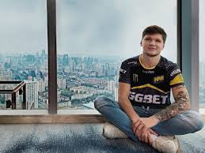

Олександр Олегович Костилєв (нар.. 2 жовтня 1997, Київ) — професійний український кіберспортсмен, також відомий як «s1mple». Грає в команді Natus Vincere (Counter-Strike) на позиції снайпера. Найкращий гравець 2018 року в дисципліні Counter-Strike: Global Offensive за версією порталу HLTV.ORG.
Виграні турніри